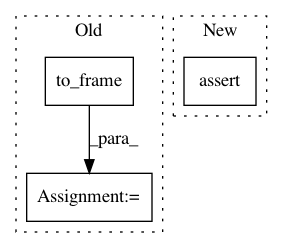

536c7c7718f18ec6c2118524d81706bee4cce2ed,linearmodels/panel/data.py,PanelData,__init__,#PanelData#Any#Any#Any#Any#Any#,154
Before Change
else:
self._frame = DataFrame({var_name: x.T.stack(dropna=False)})
else:
self._frame = x.swapaxes(1, 2).to_frame(filter_observations=False)
elif isinstance(x, np.ndarray):
if x.ndim not in (2, 3):
raise ValueError("2 or 3-d array required for numpy input")
if x.ndim == 2:
After Change
entity_str = "entity.{0:0>" + str(int(np.log10(n) + 0.01)) + "}"
entities = [entity_str.format(i) for i in range(n)]
time = list(range(t))
assert isinstance(x, np.ndarray)
x = x.astype(np.float64, copy=False)
panel = _Panel.from_array(
x, items=variables, major_axis=time, minor_axis=entities
)
In pattern: SUPERPATTERN
Frequency: 3
Non-data size: 3
Instances
Project Name: bashtage/linearmodels
Commit Name: 536c7c7718f18ec6c2118524d81706bee4cce2ed
Time: 2020-01-24
Author: kevin.k.sheppard@gmail.com
File Name: linearmodels/panel/data.py
Class Name: PanelData
Method Name: __init__
Project Name: sassoftware/python-dlpy
Commit Name: a788c58c0747f39c4f2e26d009ded2fec893d799
Time: 2019-03-10
Author: rui.li@sas.com
File Name: dlpy/tests/test_metrics.py
Class Name: TestMetrics
Method Name: test_f1_score
Project Name: pandas-dev/pandas
Commit Name: fc266a85d913c326461e90453f6c3338eae31652
Time: 2021-01-24
Author: jbrockmendel@gmail.com
File Name: pandas/tests/extension/base/ops.py
Class Name: BaseOpsUtil
Method Name: _check_op